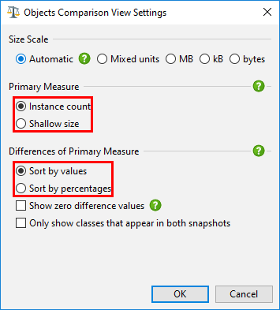
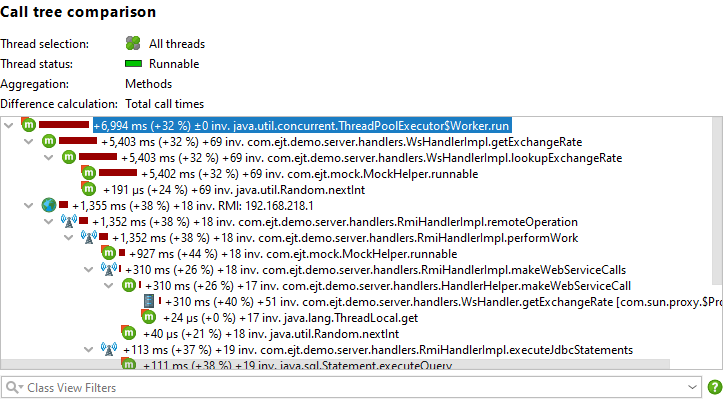

Comparing the runtime characteristics of your current application against a previous version is a common quality assurance technique for preventing performance regressions. It also can be helpful for solving performance problems within the scope a single profiling session, where you may want to compare two different use cases and find out why one is slower than the other. In both cases, you save snapshots with the recorded data of interest and use the snapshot comparison functionality in JProfiler by invoking Session->Compare Snapshots in New Window from the menu or clicking the Compare Multiple Snapshots button on the Open Snapshots tab of the start center.
Comparisons are created and viewed in a separate top-level window. First, you add a number of snapshots in the snapshot selector. Then you can create comparisons from two or more of the listed snapshots by selecting the snapshots of interest and clicking on a comparison tool bar button. The order of the snapshot files in the list is significant because all comparisons will assume that snapshots further down in the list have been recorded at a later time. Apart from arranging snapshots manually, you can sort them by name or creation time.
Unlike for the views in JProfiler's main window, the comparison views have fixed view parameters that are shown at the top instead of drop-down lists that let you adjust the parameters on the fly. All comparisons show wizards for collecting the parameters for the comparison, and you can perform the same comparison multiple times with the same parameters. The wizards remember their parameters from previous invocations so you don't have to repeat the configuration if you compare several sets of snapshots. At any point, you can shortcut the wizard with the Finish button or jump to another step by clicking on the step in the index.
When a comparison is active, the snapshots that were analyzed are shown with number prefixes. For comparisons that work with two snapshot, the displayed differences are the measurements from snapshot 2 minus the measurements from snapshot 1.
For the CPU comparisons, you can use the same snapshot as the first and second snapshot and select different threads or thread groups in the wizard.
The simplest comparison is the "Objects" memory comparison. It can compare data from the "All objects", "Recorded objects" or the "Classes" view of the heap walker. The columns in the comparison show differences for instance counts and size, but only the Instances Count column shows the bidirectional bar chart where increases are painted in red and to the right, while decreases are painted in green and to the left.
In the view settings dialog you can choose whether you want this bar chart to display absolute changes or percentages. The other value is displayed in parentheses. This setting also determines how the column is sorted.

The measurement in the first data column is called the primary measure and you can switch it from the default instance counts to shallow sizes in the view settings.
The context menu of the table gives you a shortcut into the other memory comparisons with the same comparison parameters and for the selected class.
Like the objects comparison, CPU hot spot, probe hot spot and allocation hot spot comparisons are shown in a similar table.
For each of the CPU call tree, the allocation call tree and the probe call tree you can calculate another tree that shows the differences between the selected snapshots. In contrast to the regular call tree views, the inline bar diagram now displays the change, either in red for increases or in green for decreases.

Depending on the task at hand, it may make it easier for you if you only see call stacks that are present in both snapshot files and that have changed from one snapshot file to the other. You can change this behavior in the view settings dialog.
For the CPU and probe call tree comparisons it may be interesting to compare the average times instead of the total times. This is an option on the "View parameters" step of the wizard.
For telemetry comparisons you can compare more than 2 snapshots at the same time. If you don't select any snapshots in the snapshot selector, the wizard will assume that you want to compare all of them. Telemetry comparisons do not have a time axis, but show the numbered selected snapshots as an ordinal x-axis instead. The tool tips contain the full name of the snapshot.
The comparison extracts one number from each snapshot. Because telemetry data is time-resolved, there are multiple ways to do so. The "comparison type" step of the wizard gives you the option to use the value when the snapshot was saved, calculate the maximum value or find the value at a selected bookmark.